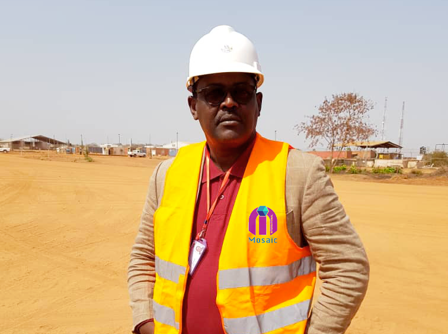

Une entreprise tchadienne engagée dans le développement économique de l'Afrique Centrale depuis 2013 — 13 ans d'expérience terrain.
Fondée en 2013 à N'Djaména, Mosaïc International SARL est une entreprise tchadienne multidomaines opérant au Tchad et au Cameroun, avec un capital social de XAF 5 000 000.
En 13 ans d'activité, l'entreprise s'est imposée comme partenaire agréé de plus de 7 agences des Nations Unies — UNICEF, PAM, UNFPA, UNHCR, OMS, UNESCO, OIM — ainsi que d'organisations comme World Vision et Carter Center. Notre flotte diverse (camions-citernes, camions, véhicules 4x4, bus) couvre l'ensemble du territoire tchadien et opère sur le corridor Douala–N'Djaména.
Notre nom reflète notre identité : comme une mosaïque, nous assemblons des expertises complémentaires — logistique, transport, BTP, forage, hydrocarbures, approvisionnement — pour offrir à nos clients une vision d'ensemble et des solutions globales.
Fournir des solutions logistiques intégrées et fiables qui contribuent au développement économique de l'Afrique Centrale.
Devenir le partenaire logistique de référence en Afrique Centrale, reconnu pour son excellence et son impact positif.
Transparence totale dans nos relations avec les clients, partenaires et administrations. Notre réputation est notre capital le plus précieux.
Des processus rigoureux, des équipes formées et des outils performants pour garantir la qualité à chaque prestation.
Nous intégrons continuellement les meilleures pratiques et technologies pour améliorer nos services et créer de la valeur pour nos clients.
Un interlocuteur dédié, une réactivité exemplaire et une compréhension profonde des réalités locales du marché africain.
Engagement environnemental et social : nous intégrons les enjeux de développement durable dans toutes nos opérations.
Capacité à s'adapter rapidement aux changements du marché et aux besoins spécifiques de chaque client.
Lancement de l'entreprise à N'Djaména. Premières opérations de transit douanier, transport et logistique au Tchad.
Ouverture opérationnelle sur le corridor Douala–N'Djaména. Premiers partenariats avec des organisations humanitaires (UNICEF, PAM).
Lancement des activités télécom : déploiement BTS, fibre optique et VSAT en partenariat avec les opérateurs Moov Africa et Camusat.
Démarrage des activités de construction d'écoles, de forages, de latrines et représentation de firmes médicales internationales.
Partenaire de l'UNICEF, PNUD, PAM, UNHCR, IOM, World Vision, Moov Africa et Camusat. 13 ans de références réelles au Tchad et dans la région.
Une équipe pluridisciplinaire alliant expertise technique, connaissance du marché africain et engagement client.

DirectionFondateur de Mosaïc International, il pilote la stratégie et le développement depuis 2013 avec 27 ans d'expérience globale.
Supervise toutes les opérations techniques avec 27 ans d'expérience globale et 7 ans au sein de Mosaïc International.
Coordonne la chaîne d'approvisionnement et les opérations logistiques avec 13 ans d'expérience, dont 10 ans sur poste.
Gestion financière et comptabilité générale de l'entreprise, 13 ans d'expérience globale.
Support opérationnel sur les activités terrain et gestion des flux logistiques, 5 ans d'expérience.
Gestion des achats et de l'approvisionnement pour les projets clients, 3 ans d'expérience.
Mosaïc International a exécuté des prestations pour les organisations suivantes au Tchad et dans la région.